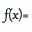

Pero MathGraph32 puede trazar la curva de una función como un lugar de puntos conectados generado por el desplazamiento de un punto ligado.
Su figura debe proveerse en un referencial.
Deben en primer lugar crear una función con la ayuda del ícono

.Si su figura implica uno o más referenciales, dabajo de la caja de diálogo se hace una marca en la casilla Trazar curva.
Si se deja la casilla Trazar curva marcada, la curva de la función se trazará automáticamente (sobre R).
Si se desea trazar la curva de esa función solamente sobre un intervalo (o no trazar la curva) desmarcar la casilla Trazar curva.
Si no eligieron trazar la curva de la función en la caja de diálogo de creación de función, pueden trazar la curva a posteriori utilizando el icono  .
.
Una caja de diálogo se abre.
Seleccione la función y el referencial en el cual se debe trazar la curva.
Elija a continuación sobre qué tipo de intervalo debe trazarse la curva.
Para crear esta curva MathGraph32 crea un punto vinculado al eje de las abscisas, una semirrecta o un segmento siguiente el intervalo de intervalo elegido.
Se crea a continuación la medida de la abscisa de este punto ligado, un cálculo igual a la imagen de esta abscisa por la función y un punto de coordenadas (abscisa, imagen).
La curva es a continuación el lugar de este último punto generado por las posiciones del punto ligado.
Pueden cambiar el número de puntos utilizados para trazar el lugar de puntos (curva).
Se puede demandar:
Nota : Es posible ligar un punto a un lugar de puntos y por lo tanto, en particular, a una curva de función.